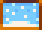

Clima:
“Bienvenidos a KOZU 5... Vuestra fuente número uno sobre el tiempo, las noticias y el entretenimiento. Y ahora, la predicción del tiempo para mañana...”
El Clima cambia a diario y con las Estaciones. El pronóstico del clima para el día siguiente puede consultarse en la pantalla del televisor y seleccionando "El tiempo". El clima afecta a los tipos de peces que puedes pescar, así como el comportamiento y diálogos de los aldeanos.
| Tiempo | Icono | Imagen en la TV | Descripción |
|---|---|---|---|
| Sol |
 |
 |
Mañana estará despejado y soleado todo el día. ¡Mañana tendremos un día hermoso y soleado! |
| Lluvia |
 |
 |
Mañana lloverá todo el día. |
|
Lluvia verde |
 |
 |
Um... Parece haber algún tipo de... lectura anómala... No... no sé qué significa esto... |
| Viento (Primavera) |
 |
 |
Parcialmente nublado con una suave brisa. ¡Espera mucho polen! |
| Viento (Otoño) |
 |
 |
Va a estar nublado, con ráfagas de viento a lo largo del día. ¡Mañana tendremos un día hermoso y soleado! |
| Tormenta |
 |
 |
Parece que se acerca una tormenta. Se esperan rayos y truenos. |
| Nieve |
 |  |
Se esperan unos dedos de nieve mañana. A abrigarse todos. ¡Mañana va a nevar! |
| Festival |
 |
 |
Mañana será un día despejado y soleado... ¡El tiempo perfecto para el evento «Festival»! |
| Día de la Boda |
 |
N/A | (Esta imagen aparecerá en lugar del icono del tiempo el día de la boda de un jugador) |
Probabilidades Meteorológicas
La probabilidad de que un día concreto sea soleado/lluvioso/tormentoso/etc. depende de varios factores. En la Isla Jengibre sólo hay dos tipos de clima: sol y lluvia. La probabilidad de lluvia es del 24% (0% en la primera visita).
Tormenta:
- Los días de tormenta siempre llueve. Los peces que requieren lluvia pueden pescarse en días de tormenta, y el Viejo marinero aparecerá en días de tormenta.
- Durante una tormenta, los rayos pueden destruir casillas aleatorias de la granja. Esto incluye cultivos y árboles. Si cae en un Árbol Frutal, éste se convertirá en un árbol que da carbón durante unos días.
- Si un rayo cae sobre una casilla en la que hay un suelo o un camino creado, el suelo o el camino se saldrán de su sitio, pero no se destruirán de forma permanente.
- Existe la posibilidad de que caiga un rayo cada 10 minutos.
- Los rayos no alcanzarán los Cofres que estén en el exterior.
- Si colocas un pararrayos en cualquier lugar de la granja, tienen una buena oportunidad de interceptar los rayos, siempre y cuando no estén ya procesando un rayo en una Pila.
- Usar un Tótem de lluvia nunca tiene la posibilidad de causar una tormenta a menos que se use en un día tormentoso (lo que hará que el día siguiente también sea tormentoso). De lo contrario, sólo provocará lluvia.
- Siempre hay tormenta los días 13 y 26 de verano, todos los años.
Nevada:
- Las Semillas invernales deben ser regadas incluso si está nevando.
- La transparencia de la nieve puede ser cambiada en el Menú de Opciones. Al deslizar la barra hacia la izquierda aumentará la transparencia de la nieve (es decir, disminuye la opacidad).
Lluvia verde:
- La lluvia verde ocurre aleatoriamente una vez cada verano.
- Los árboles de lluvia verde y los hierbajos aparecen en grandes cantidades en todo el valle (excepto en la playa y en el desierto).
- Los árboles jóvenes existentes fuera del invernadero tienen la posibilidad de crecer completamente en los días de lluvia verde, mientras que los árboles maduros pueden cubrirse de musgo y/o convertirse en árboles silvestres durante todo el día.
- Todos los árboles de lluvia verde, ya sean generados o transformados, volverán a su árbol original al día siguiente.
- Las malas hierbas generadas por la lluvia verde lo hacen de forma no destructiva y desaparecen al día siguiente.
- Ciertos dispositivos no funcionan durante el evento.
- Todos los canales de televisión mostrarán una estática de TV verde.
- La máquina de discos en el Salón no suena.
- En el primer año, la mayoría de los aldeanos permanecerán dentro de sus casas todo el día, excepto Demetrius, Leah y Linus. Se puede ingresar a los edificios a los que puede acceder el jugador en cualquier momento del día, independientemente de su horario habitual.
Otros:
- El primer año, siempre está soleado en la Primavera 1, 2 y 4, y siempre llueve en la Primavera 3. A partir de la Primavera 5 en adelante, el clima es aleatorio, con ciertas excepciones.
- El Tótem de lluvia cambiará el tiempo del día siguiente a lluvia, a menos que el día siguiente sea un festival o el primer día de una estación. (La primavera 2-4 del año 1 tampoco puede ser cambiada por un Tótem de Lluvia).
- El tiempo siempre será despejado y soleado los días de Festival.
- Nunca lloverá en Invierno a menos que se utilice un Tótem de lluvia.
- Si hay un Festival el día de la boda de un jugador, el icono del corazón no se mostrará.
- Para todos los eventos de corazones de aldeanos, sólo hay dos condiciones meteorológicas definidas: Sol y Lluvia. Esto significa que cualquier evento que requiera un día "soleado" puede activarse tanto en días de viento o nieve como en días soleados. Los días de tormenta cuentan como días de lluvia, por lo que los eventos en un clima "soleado" no se activarán.
Curiosidades:
- Aunque el invierno no puede tener clima ventoso sin modificar, sigue habiendo un mensaje oculto para ese tiempo en la previsión meteorológica: "Va a nevar todo el día. ¡Abrigaos bien!".
Errores:
- La Televisión no será necesariamente exacta para la Primavera 2 o 4, o el Verano 13 o 26.
- La Televisión pronosticará un clima tormentoso el 25 de Verano, pero no el 26. Si el jugador no consulta la previsión de la TV el día 25, puede que no haya tormenta.